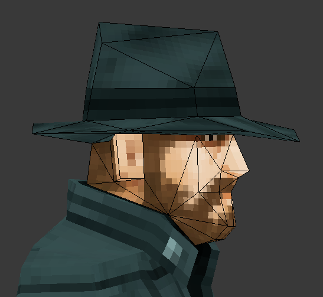
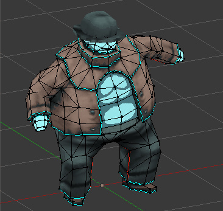
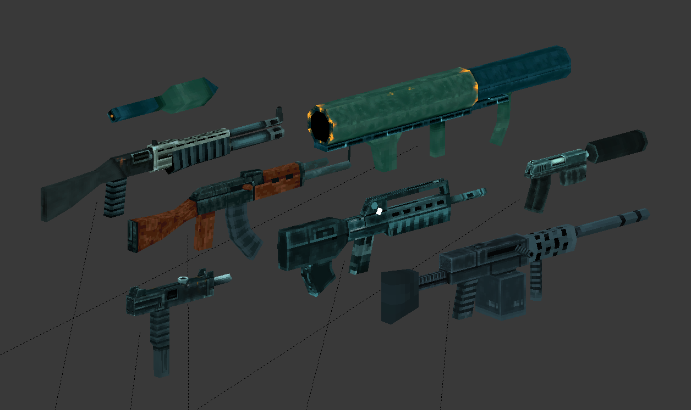
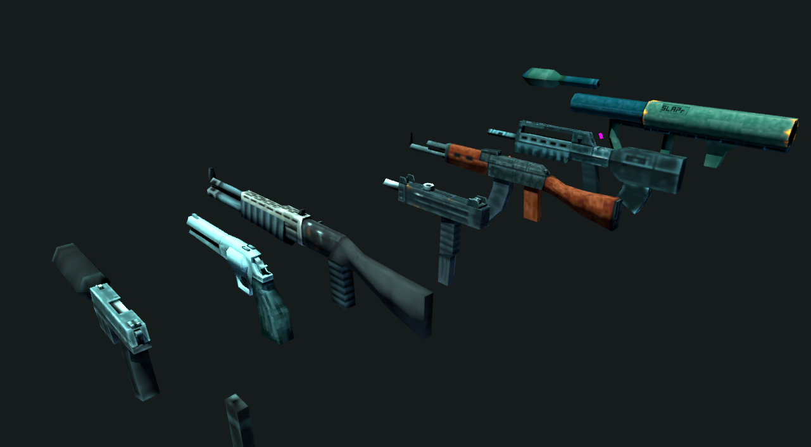
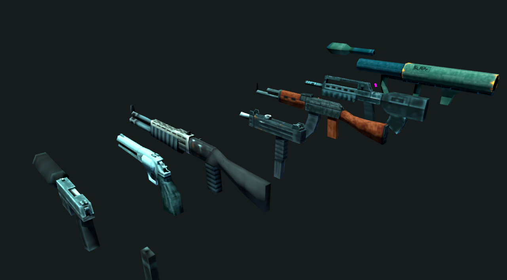

With an arm-cannon. It uses two 64x64 textures, each with its own 16-color palette.


With an arm-cannon. It uses two 64x64 textures, each with its own 16-color palette.
A character designed for a first person shooter.


An enemy with bird-like features, designed to be the equivalent of the "Jackal" from Halo.


Slightly higher poly-count and texture-resolution and designed with texture-filtering in mind. Big continious UV-islands and seams where it doesn't hurt.


In-engine footage. ( Please ignore the important text, it's not important.)
Here are some weapon models used in my FPS project. Each weapon rigged, animated and textured with 16-color 64x64 images. They are made to look good from the first person perspective, sacrifices in detail are made where it mostly goes unseen.
 

Seal Mario.